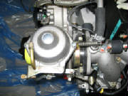
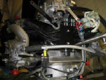
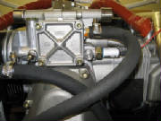
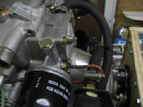
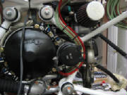

|
April 28, 2007 4.5 hours - Begin the engine modifications
Next, I
removed the two carburetors. I disconnected spring between each carburetor and the cross-connect tube. These springs
appear to be there merely to stabilize the carbs mechanically. The carbs are mounted to the intake manifolds by rubber
sleeves, using what are essentially hose clamps. I loosened the clamps, removed the carbs and sealed them in plastic
zip lock bags until it's time to reinstall them.

|
| Disconnect this spring, loosen the ring clamp and remove the entire carburetor |

|
| Rubber carburetor mounting sleeve and mounting clamp |
I then disconnected the wire connector blocks leading to the
ignition assemblies, numbering them to ensure that I match them correctly when they are reconnected. I also removed
the connector blocks from the metal mounting bracket so that the ignition assemblies can be moved out of the way.

|
| The plastic zip ties securing the spark plug wires must be cut to move the ignition assemblies aside |
|
| Removing ignition assembly from shock mount |
The coolant fill canister on top of the engine is attached
only to the water hoses, so I loosened the hose clamps on the four rubber hoses and removed the entire assembly.
I covered all of the openings created by removing stuff, wrapping them with plastic held in place by zip
ties.
I disconnected the water hoses from the water pump at the aft
bottom end of the engine, which allowed a few ounces of coolant to drain out. Two of the hoses could not be completely
disconnected until the water pump was removed. Removing the pump was straightforward, accomplished by removing the bolts
and pulling it off, being careful not to tear the paper gasket. In some places the gasket will stick to the pump and
in others the gasket will stick to the engine case, so a little careful coaxing is required. By leaving a couple of
the bolts backed off but still in place, the pump can be pulled out a couple of millimeters, then the gasket freed up carefully
with a knife blade where it is sticking to the pump housing or the engine case.

|
| Water pump impeller on bottom rear of engine case |
|
| Water pump housing prior to modification |
The kit manual instructs to modify the water pump, but the specifics
are not clear. I have written Tomaz at the factory for clarification on that and some other details that I can't
quite figure out from the pictures in the kit manual. I also need to determine how to support the engine for further
work. So far, I have left it mounted to the bottom of the shipping box, but I'll need to get it up in the
air to complete the mods.
May 27, 2007 1.5 hours - Water pump modifications and engine mount installation
I received answers and photos from Tomaz in reply to my questions
about the engine modifications. Tomaz confirmed that they support the engine while working on it by bolting the prop
flange to a circular bracket. This allows the engine to be rotated around the crankshaft while working on the top and
bottom and mounting the various accessories.
Tomaz also provided some more detail about the water pump modifications, including the one pipe that is replaced
by the 80-degree pipe supplied in the kit. He also clarified that the water connection box described in the kit manual
is not used anymore, and has been replaced by the welded tube manifold assembly supplied with the kit.
I
added the photographs from Tomaz to the Supplemental Photos and Drawings page.
Meanwhile, I read through the Rotax engine installation
manual, the line maintenance and heavy maintenance manuals, and the illustrated parts catalog. These were very informative
and enlightened me quite a bit about how the engine is put together, plus things like bolt torques, types of Loctite to use
in various places, assembly sequences, etc.
I ordered an assortment of gaskets, lock washers and various specified
types of Loctite from Lockwood Aviation Supply. The Rotax maintenance manual specifies that the lock washers are not
to be reused, nor does it make sense to try to salvage the old water pump gasket, since a replacement new gasket is not expensive.
I bought a 2-ton shop crane from Harbor Freight and used it
to get the engine up in the air, remove the bottom of the shipping container that the engine was bolted onto, and put the
engine on my workbench. Note that the engine is supported for the lift by heavy straps passed under the intake
manifold. The Rotax maintenance manual says that this is an approved way to lift the engine, and it worked nicely.
I can do some of the modification work with the engine sitting on the shipping brackets, but plan to build a plywood
support structure to which I will bolt the propeller flange in the same way that the factory does it. Note that when
rotating the engine around the propeller flange, it is important to rotate the engine so that crankshaft rotation that the
engine sees is the direction of normal propeller rotation. The Rotax manual explains why this is important, and is also
the reason why the propeller on a Rotax engine should never be rotated backwards.
I removed the generator cover and rotated the engine two
full turns counterclockwise (as viewed from the magneto end) as described in the Rotax manual for preservation after the engine
has been stored for a full year. This was because the engine was packed for shipment in May, 2006, and is the method
specified in the Rotax maintenance manual for engines that have been stored for more than one year prior to installation.
The engine is turned by applying a wrench to the large nut on the magneto end of the crankshaft.
The engine turned over smoothly, with noticeable compression at the proper
points. The engine seems to be in good shape -- smooth and tight. The anti-corrosion packing was intact until
April of this year, and it has been in the dry workshop for several months, so this is not surprising.
I removed the bolts and fittings in preparation for installing the
Pipistrel engine mount.
The mount itself is about 1 mm narrower than the distance between
the mounting flats on the engine. I wrote Tomaz and asked him for a recommended fix.
Tomax replied
that it's very difficult to achieve precise dimensions on welded assemblies, and that it's OK to bend the flanges on the engine
mount enough to slip over the engine mounting points.
July 20, 2007 2.5 hours - Build engine stand
I assembled an engine stand from 3/4 inch plywood, allowing the
engine to be supported from the propeller flange as Pipistrel does it at the factory. I used 1/2 inch bolts to mount
the engine, which are within half a millimeter of the 13mm diameter holes in the outer rim of the propeller flange.
The stand is fastened together with wood screws and glue.
I used my engine hoist to support the engine, then I bolted the plywood stand to the prop flange, then I lowered
the assembly onto my workbench and clamped it to the bench with some heavy C-clamps. Now I can rotate the engine easily
to work on both the top and bottom of the engine for the remainder of the modifications.
July 21, 2007 2.0 hours - Modify water pump
housing
The email from Tomaz mentioned that the angles of the elbows
coming off the water pump are intended to prevent interference with the engine mounts, so I unpacked the lower engine mounts
and attached them to the engine temporarily. Then I held the unmodified pump in place to confirm where the interference
occurs. It was apparent that in addition to replacing lower right elbow as instructed, the upper left elbow needed to
be repositioned slightly. The pictures below show the unmodified water pump. You can see the interference with
the engine mounts.
The water pump photos from Tomaz clarified that the lower
right elbow is the one to be removed and replaced with the new elbow supplied with the kit. I clamped the water pump
in my bench vise, protecting the surfaces of the pump with wood strips. I turned down the end of a wooden dowel to fit
into the open end of the elbow, then heated the attach point with a high-temperature heat gun I purchased at Home Depot.
The Rotax maintenance manual specifies green Loctite 648 for these joints. The manual also says that to
separate parts secured by Loctite 648, they must be heated above 250 degrees C (480 degrees F). After applying heat
for a couple of minutes, the elbow was easily removed. I then tried fitting the new elbow and discovered that it interferes
with the upper right elbow when screwing it into the water pump, so I removed that elbow, also.
The photo
below shows the method of turning the HOT elbow to unscrew it from the housing.
The photo below shows the original elbow with a 45 degree bend and the new one with an 80 degree bend.
I then removed the upper left elbow in the same fashion.
I carefully removed the old Loctite from the threads of the two elbows that were to be reinstalled, then screwed all the elbows
in place temporarily, placed the water pump on the engine and marked the angles necessary to avoid interference with the engine
mounts.
Then I removed the elbows, applied
Loctite 648 and assembled them at the proper angles.
The photos below show the modified water pump and how it now
routes the water lines around the engine mounts.
July 22, 2007 5.5 hours - Install upper engine mount
First, I inventoried the parts in kit package F0022 -- engine
installation. This took quite awhile, checking the parts against the kit manual and the photographs to try to figure
out where everything is used. There are a few discrepancies, but I concluded that this is because a few of the parts
listed in the parts inventory were installed at the Pipistrel factory. These appear to be associated with the mounting
of the electronic ignition assembly.
As
Tomaz suggested in his last email, I bent the flanges of the upper engine mount slightly so that it would fit over the engine
attach points. This turned out to be pretty easy.
Then I studied the various photos supplied with the engine to be reasonably sure which parts are used to attach the
engine mount. I concluded that the right side of the mount is attached with the original 10 mm socket head cap screw
that also goes through the engine case halves at that point. I used the original flat washer under this bolt, and replaced
the lock washer with a new one that I had ordered from Lockwood Aviation. I attached the left side of the engine mount
with an M10 x 25mm socket head cap screw from package 1031600 and a 10.5mm plain washer from package 1030020. For the
top mounting hole I used the spacer bushing, 20 mm diameter, 8 mm hole, 10.2mm long, part number 1031400, between the engine
mount and the engine block, secured with an M8 x 30mm socket head cap screw from package 1030020 and an 8.4mm flat washer,
25 mm diameter, also from package 1030020. I applied blue Loctite 243 to all of these screws.
The photos below show the three bolts that attach the engine mount to the
engine block.
The next step is to fit the carbon fiber engine cooling scoop. After looking at how it fits onto
the engine, it became apparent that I will have to remove the intake manifold assemblies to get the scoop into position.
A close look at the engine assembly pictured in the kit manual confirms that at the Pipistrel factory they have the manifolds
removed for this step.
I'm leaving in two days for a week-long business trip, so I will
tackle this step when I return.
August 14, 2007 0.5 hours - Prepare cooling air
scoop for installation
I had emailed Leon Brecelj at Pipistrel to ask for clarification
on the rubber strips that the kit manual says are installed on the carbon fiber air cooling duct. Leon has replaced
Tomaz in providing factory customer support. The kit manual says to install rubber strips, and the small pictures in
the manual did not provide enough detail to determine exactly what is supposed to be done. I was looking for some sort
of edge protector, but after receiving email clarification with accompanying pictures from Leon, I realized that I was looking
for the wrong material. The pictures from Leon clearly showed foam material approximately 1/4" thick. So, I concluded that part number 1036201 from kit package
F0025 was what I was looking for. This is adhesive-backed foam 1 cm thick, 5 cm wide, and one meter long. Following
the photographs from Leon and in the kit manual, I cut the foam to appropriate sizes and applied it to the intake duct.
|
| Cooling air duct and adhesive-backed foam strip as supplied in the kit |
There is a stepped three-layer strip of foam at the rear center of the duct, and a foam rectangle on three
of the four tabs that wrap down around the cylinders. The tab next to the air scoop at cylinder number 1 remains bare,
according to the instructions and pictures in the kit manual.
Note that the foam has protective covering on both the adhesive side and on the non-adhesive side. The blue
covering on the adhesive side is obvious, but the clear covering on the black non-adhesive side is easily missed. If
you leave it in place, the layers of foam will quickly delaminate.
August 16, 2007 1.8 hours - Install cooling air duct, modify water elbow
I removed the two air intake manifolds and the four water connection elbows from the top of the engine.
That allowed me to place the carbon fiber cooling air duct on top of the engine, with some gentle coaxing. It fits nicely
between the engine mount and the prop speed reducer housing.
A closer look at the water connection elbows revealed that
the elbow on number 4 cylinder head has to be rotated about 45 degrees counterclockwise for the water hose to clear the engine
mount. So, as with the repositioned elbows on the water pump, I clamped it loosely in a vise, heated it for a
couple of minutes with my heat gun to loosen the Loctite and unscrewed it with the same tapered wooden dowel that I used before.
I then cleaned up the threads on the elbow, applied Loctite 243 (blue) and screwed it back into the flange, rotated so
as to clear the engine mount.
The photograph below shows the elbow prior to modification. You can
see that it points directly at the engine mount.
Note
that the water elbow fitting protrudes a millimeter or so from the bottom of the flange after it is screwed into the flange.
This protrusion seals against the orange plastic ring visible in the photos that show the elbows removed. I didn't
want to back the elbow further out of the flange to get the proper angle, because I had talked to another Pipistrel owner
who had a problem with water leakage at one of these flanges, which he fixed by taking the flange off and screwing the elbow
further into the flange. So, instead of leaving the elbow 45 degrees counterclockwise from the original position when
I screwed it back into the flange, I rotated it 135 degrees clockwise past the original position, and then, since the flange
is symmetrical, I reinstalled it with the flange rotated 180 degrees to get the proper elbow orientation to clear the engine
mount. I hope that makes sense.
I
then re-installed the four water connection elbows, using new lock washers and torquing them to the value specified on Page
1 of Chapter 34 in the Rotax Illustrated Parts Catalog. Later, while working on the installation of the water hoses
and water manifold, I concluded that it would have been easier to have connected the elbows to the hoses and manifold first,
then bolted the elbow flanges to the engine.
As
Tomaz had mentioned in an earlier email, the cooling water distribution manifold has changed since the kit manual was written,
but the photos that he sent make it pretty clear how to position it and connect it to the water fittings.
August 18, 2007 2.2 hours - Install carburetor
control bracket, water hoses and water manifold
I attached the carburetor cable bracket to the upper engine mount with two M5x10 bolts and nylon lock nuts
with Loctite.
I then removed the water lines from the Rotax water reservoir
that came with the engine and cut them to the appropriate lengths to install the Pipistrel water collection manifold.
The air intake manifolds need to be removed for this step. I had lightly bolted them in place after installing the cooling
air duct, to keep any foreign material out of the cylinders. While working on the water lines, I used a crumpled paper
towel to temporarily plug the cylinder intake ports.
Because of the relatively short hose runs, it is probably a good idea not to bolt the water line elbows in place until they
have been attached to the water lines, but I had already torqued the elbows down, so with a little fiddling I was able to
work the water lines over the fittings and get the hose clamps in place.
These steps took a lot longer than it seems that they should need, but it required some time to reconcile the parts
with the inventory, compare everything with the kit manual, study the pictures from Leon at Pipistrel and convince myself
that I was doing it all correctly.
August 19, 2007 0.2 hours - Install propeller control arm
I re-installed the propeller adjustment control arm into the bracket. I had to remove the control
arm previously in order to perform the other engine work, but I left the bracket in place, so it was simple to mount the control
arm with one bolt and two thin washers that appear to be made from teflon. I applied blue Loctite 243 to the nylon lock
nut to ensure that it does not loosen.
September 2, 2007 4.5 hours - Install intake
manifolds, water pump, lower engine mounts, oil cooler and ignition assemblies
I removed the cap screws holding the upper engine mount in place, then reinstalled the screws using my new
electronic torque wrench to apply proper torque as specified in the Rotax Illustrated Parts Catalog, using blue Loctite 243.
Note that some individual bolts have a torque specified in the parts catalog where the
individual bolt sizes and part numbers are listed, accompanying the assembly drawings. Where no torque is specified
with the part number, the common torque for the bolt size applies. These common torques are found in Chapter 34 of the
Illustrated Parts Catalog, at the top of page 1. Chapter 34 also repeats the proper torque values for all bolts found
in previous chapters.
I then completed the installation of the intake manifolds with new
lock washers and torqued them to specs.
I scraped a few remaining bits of gasket material from the water pump housing and reinstalled it on
the engine block using a new gasket and new lock washers. Note that the bolt with a copper washer goes in the bottom
mounting hole of the pump housing. I replaced this copper washer with a new one. All bolts were torqued to specs
from the Illustrated Parts Catalog.
I then installed the water inlet elbow, oriented
as shown in the photos provided with the kit. I used a new o-ring and new lock washers for this installation.
I installed the lower engine mounts using M10 bolts and Loctite 243, torquing them to the value specified
for M10 bolts.
I then connected the water lines to the two upper elbows on the water pump. Then I slid the water line
heat protection sleeve over the two lower water lines and connected those lines to the two lower water pump elbows.
The heat protection sleeve has an outer covering that is quite flexible and it can be pushed back onto the lines
far enough to permit installation of the hose clamps. Then it can be stretched and worked over the hose clamps at the
ends of the water lines, thus covering the full length of the water hose.
As instructed in the kit manual, I chamfered the two threaded holes on the left side of the gear box.
I used a metal counter sink purchased from Home Depot to do this. The reason for the chamfer is to provide a slight
relief that permits the threaded studs on the aluminum spacers to screw completely into the gear box, allowing the body of
the spacer to fit flush against the machined surface of the gear box.
I mounted the
two aluminum spacers using blue Loctite 243, then screwed two rubber shock mounts into the spacers. The threaded studs
on the shock mounts were about 7 mm too long, so I cut them shorter so that they would seat flush with the ends of the spacers.
I secured the shock mounts to the spacers with Loctite 243.
I then mounted the oil cooler to the shock mounts using two M6x10 hex-head bolts and lock washers, and one
M10x16 hex bolt and lock washer, screwed into a matching hole in the gear box housing. In addition to the lock washers,
I applied Loctite 243 to all three of these bolts.
The installation of the coils and electronic ignition assemblies has changed since the kit manual was
written, but using the pictures provided with the kit and the pictures I took before I disassembled the engine, I reinstalled the shock mounts, spacer arms and the ignition assemblies.
Note that the two coil ground wires are secured under the forward mounting screw for the right-hand intake manifold.
I then slid the four female connectors onto the mounting arms until they clicked in place,
and inserted the matching male connectors using the numbers that I marked on them during disassembly.
September 3, 2007 2.5 hours - Install carburetor
control bracket, oil lines and spark plug wires
I attached the bracket that holds the throttle and choke cables to the mounting angle on the upper engine mount.
I used two M5x10 cap screws (the mounting angle has matching nutserts installed) and blue Loctite 243.
I then removed the oil inlet line fitting from the oil pump and replaced it with a different fitting provided
with the kit. This fitting has a nipple for attaching the flexible oil line using a hose clamp. I used blue Loctite
243 as specified in the illustrated parts catalog and screwed it in, applying the specified torque. I then attached
the oil line to the nipple using a hose clamp. This oil line came already attached to the upper oil fitting on the oil
cooler.
This picture shows the original fitting on the oil pump.
This fitting is removed and replaced with a brass nipple fitting.
This picture shows the oil line attached to the oil pump inlet
nipple. The other end of this line goes to the upper fitting on the oil cooler.
Then after studying the kit manual and the supplemental pictures supplied with the kit, I determined the path for the oil line from the lower nipple fitting on the oil cooler. I worked the line over the
nipple and secured it with a hose clamp. I then routed the line as indicated in the kit manual and secured the two lines
together with a cable tie as shown in the pictures. The upper end of one oil line is tied to the right intake manifold
using cable ties and a short length of oil line as a stand-off spacer. This was also copied from the pictures that came
with the kit.
These pictures show the oil line attached to the lower fitting
on the oil cooler and secured to the other oil line with a cable tie.
This picture shows the upper portion of the oil line and how
it is secured to the intake manifold using a short length of oil line as a stand off. A single cable tie is not long
enough for this, so simply chain two cable ties together to obtain the length required.
Finally, I studied the photos to determine the proper routing for the spark plug wires. I routed the wires accordingly, connected them to the spark
plugs and secured them to the water lines with cable ties as shown in the pictures.

September 6, 2007 0.8 hours - Install carburetor
compensation tube assembly
The right-side angle fitting for the carburetor compensation tube connection had to be rotated to avoid
interference with the water collection manifold tube. I unscrewed the fitting from the intake manifold, cleaned the
threads and applied Loctite 574 as specified in the Rotax Illustrated Parts Catalog. I reinstalled the fitting, reoriented
to route the compensation tube behind the water manifold.
The left-side angle fitting was
OK as originally installed.
I then installed the compensation tube and tightened the hose
clamps that secure it to the two angle fittings on the left and right intake manifolds.
This picture shows the right-side fitting rotated so that the
compensation tube passes behind the water manifold.
September 7, 2007 0.4 hours - Mount carburetors
I loosened the carburetor mounting clamps, inserted the carburetors into the rubber mounting flanges and tightened
the clamps against the spacer sleeves that control the clamping force on the rubber flanges.
These pictures show the carburetors reinstalled but not yet modified.
September 8, 2007 1.8 hours - Modify carburetors
I then studied the carburetor modification instructions in
the kit manual and the supplemental photos that came with the kit to determine how the carburetors are modified for the Sinus installation.
I removed the throttle control lever from the throttle shaft and removed the support bracket from the top of the
carburetor. The brass bowden cable mounting fitting for the throttle cable is removed from the support bracket and screwed
into the carburetor, pointing down toward the throttle lever. The curved bowden cable tube that routes the choke cable
to the choke lever needs to be loosened and rotated to point forward, angled to pass to the side of the throttle bowden fitting.
The large hole in the end of the throttle stop
lever is opened up to 7 mm, and then the allen screw, brass sleeve, brass washer and nut on the end of the original throttle
control lever are removed from that lever and remounted in the 7 mm hole on the throttle stop lever. For the Sinus installation,
the throttle cable is connected to this screw/sleeve/washer assembly and moves the throttle shaft via the throttle stop lever,
rather than the original throttle control lever.
The throttle return spring that was disconnected from the throttle control lever is now connected to the throttle
stop lever as shown in the kit manual. Note that this revised return spring connection causes the spring pressure to
hold the throttle at the fully closed position, rather than the fully open position that is standard for the Rotax.
Thus the Sinus throttle cable pulls the throttle open against the return spring tension. In the standard Rotax throttle
operation. the throttle cable pulls the throttle closed against the return spring tension.
|
| Note that the revised throttle return spring now holds the throttle fully closed |
The Sinus kit manual also appears to say that the bowden cable connection point on the choke control lever
is drilled out to 7 mm; however, I checked the fit of the cable connect fittings from the Sinus kit and determined that they
fit into the choke lever as delivered, so I did not drill the choke lever, but left it alone.
These parts remain after the carburetor modifications, and are not
used in the Sinus installation.
September 7, 2007 0.2 hours - Add spacers between
water manifold and engine mount
I also noted in the supplemental photos from Pipistrel that the factory installed two rubber spacers between the water manifold that the upper engine mount.
These spacers appeared to be short sections of water hose so I cut a piece of hose from some excess material, sliced it down
the middle lengthwise, and worked the two pieces between the water manifold and each end of the upper engine mount.

September 9, 2007 0.3 hours - Install magneto cover
I installed the magneto cover, using Loctite 222 (violet) on the three screws and torquing them to 70 in-lb
as specified in the illustrated parts catalog. The catalog specifies Loctite 221, but it appears that Loctite 221 and
222 are equivalent products.
September 12, 2007 0.8 hours - Install fuel
lines
After careful study of the kit manual and the photos from Pipistrel, I began installing the fuel lines.
The kit includes a four-way splitter with three
6 mm fuel lines (with fire sleeve covering) attached to three of the legs and a restrictor installed in the fourth leg.
The kit manual notes that this restrictor is where the fuel return line is connected. I routed the line opposite the
splitter to the fuel pump and connected it to the output port of the pump using a 12 mm hose clamp.
I then installed a length of 8 mm fuel hose and fire sleeve to the input port of the fuel pump using a 13 mm hose
clamp.
This picture shows the fuel splitter. It is positioned
on top of the enginer near the left carburetor. The bare splitter stub has a brass restrictor. The fuel return
line will be connected here after the engine is mounted on the airplane.
At this point I needed some more information regarding the
location of the fuel flow sensor. The kit manual indicates that the sensor is installed just above the gascolator in
the supply line leading to the intake port of the fuel pump. The photos that came with the kit appear to show the flow sensor in a line leading to one of the carburetors. The photos also
show a fuel filter installed above the gascolator, in the location where the kit manual shows the flow sensor.
I sent an email to Leon Brecelj at the Pipistrel factory for clarification.
I also posted a query to the Matronics Rotax user forum.
September 13, 2007 1.8 hours - Install fuel
lines
An email reply from Leon clarified the fuel flow sensor installation.
He said that the fuel filter shown in the kit manual is installed temporarily by the factory to catch residue from the fuel
tanks during the factory flight test period. Composite fuel tanks inevitably shed tiny glass or carbon fibers when first
used, and the installation of vent lines, etc. is likely to create some residue, so this in-line filter allows the factory
to quickly check and remove any obstructions. Their temporary filter has a plastic housing and is not intended for long-term
use, because it is not fire resistant. They remove this filter before the aircraft is delivered. Leon advised
that for a one-time owner-built airplane, the time saved by the temporary in-line filter is not so important. He instructed
to simply check and clean the filter screen in the gascolator after every two hours of flight during the first ten hours,
or until no further debris is found on the screen.
Leon
also explained that the fuel flow sensor was originally installed in line between the gascolator and the fuel pump, but the
flow measured at that point is in error by the amount of flow being returned to the fuel tank by the fuel return line at the
fuel splitter. They have since begun installing the flow sensor in the line leading to the left carburetor. This
requires calibrating the fuel instrument to double the flow and account for the flow to the other carburetor. After
discussing this on the Matronics Rotax engine user forum, I'm planning to put the fuel flow sensor in the original location
and account for the fuel return flow by the calibration process.
I'm also not sure that the Brauniger fuel flow instrument provided with the kit is compatible with the Dynon
FlightDek 120 that I plan to use, but I suspect the sensor produces pulses like other sensors commonly do, and that the Dynon
can be easily calibrated. The ratio between fuel flow to the carburetors and return fuel flow may not be linear, but
I suspect the error due to non-linearity will be negligible.
After some photograph study and some fiddling, I determined the path for routing the fuel lines to the
two carburetors and connected them with 12 mm hose clamps.
The next challenge was deciphering the method used to secure the fuel lines near the number 4 cylinder
head. The method shown in the photographs provided with the kit is different from the kit manual, and there were some related parts in the kit that did not match the
parts inventory. I eventually concluded that a bracket is attached to the number 4 cylinder head and the fuel hoses
are secured to the bracket with two hose clamps.
So, I attached the bracket to the cylinder
head with an M6x16 cap screw, secured with Loctite 243. I attached the fuel hoses to the bracket with two hose clamps,
an M6x18 cap screw and an m6 nylon lock nut. I used a 20 mm hose clamp on the carburetor fuel line and a 22mm hose clamp
on the fuel supply line.
September 13, 2007 0.9 hours - Install engine
mount
I decided to attach the engine mount to the engine at this point, to check fit and clearances before
proceeding with the rest of the engine modifications.
The engine mount matched the
engine attach points and the assembly of the shock mounts was straightforward. I did not apply Loctite or completely
tighten the nuts at this point. I will do that when the remainder of the modifications are complete, in case I need
to remove the mount for the intervening steps.
Each of the four engine mount attach
points is captured by a bolt, two washers, two steel cups, two rubber shock absorbers and a bushing, secured by a nylon lock
nut. When the parts are assembled and the engine mount point is secured between the rubber shock absorbers, the nut
is tightened on the bolt until the two steel cups bear directly on the bushing.

September 19, 2007 1.8 hours - Begin exhaust system installation
I unpacked the exhaust system components and studied the kit manual and the Pipistrel photographs to determine
how they fit onto the engine.
I screwed the four Exhaust Gas Temperature (EGT) probes into the fittings on each of the four exhaust pipes,
using a copper washer and anti-seize compound on each probe.
I then mounted the exhaust
pipe to the number 1 cylinder exhaust port, first applying the special anti-seize compound provided with the titanium exhaust
components. The instructions for this compound say to put a thin layer on the inside surface of the female mating surface
only. The nuts that hold the pipe in place are not fully tightened at this point, so that the pipe can be adjusted for
final fit of the exhaust system components.
|
| EGT probe and exhaust pipe fitting |
The instructions for the anti-seize compound also make it very
clear that this is a very hazardous material that should not come in contact with the skin, so I used disposable nitrile gloves
every time I applied this compound.
I then observed that the kit contains an oil pressure sensor that is different from the sensor installed on
the engine. So, I removed the original oil pressure sensor and installed the one from the kit, using blue Loctite 243
as specified in the Rotax Illustrated Parts Catalog.
|
| Original oil pressure sensor |
|
| New and old oil pressure sensors |

|
| New oil pressure sensor installed |
September 24, 2007 1.7 hours - Continue exhaust
system installation
Fitting the exhaust pipe to the number 3 cylinder requires that the number 3 exhaust pipe first be slipped
into the exhaust collector Y-joint. Then the exhaust pipe is then slipped into the number 3 exhaust port while at the
same time slipping the other leg of the Y-joint onto the number 1 exhaust pipe. The two female ends of the Y-joint are
first coated with the special anti-seize compound for titanium material. The nuts are then screwed onto the mounting
studs at the exhaust ports, but leaving them loose enough to allow final adjustments.
I found that neither an open-end wrench nor a socket wrench will reach one nut on the number 3 exhaust,
but I could get access using a crow foot wrench and a socket extension.

|
| Using the crow foot and extension to get access to the exhaust pipe nut |
The muffler support bracket is different from the kit manual and also different from the Pipistrel photographs; however, it was apparent how the supplied parts are intended to go together. So I assembled the parts temporarily
and sent some photos to Leon at Pipistrel for verification. The washer in the photo is a composite material that I assume
is used for preventing dissimilar metal contact between the titanium muffler and the aluminum bushing in the support
bracket.
September 25, 2007 2.4 hours - Complete exhaust
system installation
I realized that a heat shield is installed on the exhaust elbow below each of the carburetors. I
installed the heat shield on number 3 exhaust pipe, although it was not easy to access after the exhaust pipe is installed.
So, I also installed the heat shield on the number 4 exhaust pipe at this point, prior to installing it on the engine.
|
| Heat shield on number 3 exhaust pipe |
|
| number 4 exhaust pipe - heat shield installed |
Before proceeding with the remainder of the exhaust system installation, I loosened and repositioned the banjo
fitting on the bottom of the crankcase to route the oil supply line past the exhaust pipes and the number 3 cylinder to the
oil tank. As specified in the Illustrated Parts Catalog, I applied Loctite 222 to the banjo bolt and torqued it to 310
inch-pounds. I then attached the oil line to the fitting using a hose clamp and safety wired the banjo fitting bolt
to a crankcase screw head.
I then installed the remaining exhaust components in the following sequence (note that the special titanium
joint compound was first applied to the female surface on all of the exhaust system joints. I also used anti-seize compound
on all the nuts that attach the exhaust pipes to the cylinder heads):
1. Slide the muffler onto the Y-joint
coming from cylinders 1 and 3.
2. Attach the exhaust pipe to the number 4 cylinder exhaust port, leaving it loose
enough to rotate for final fitting.
3. Slide the Y-joint onto the muffler, then onto the number 4 exhaust pipe.
This requires some rotation of the exhaust pipes at the cylinder exhaust ports, which is why they are left somewhat loose
until final system assembly.
4. Slip the number 2 exhaust pipe into the Y-joint and the number 2 exhaust port.
Secure the nuts, but not tightly yet.
5. Attach the eight springs that pull the pull the various exhaust system
joints together. Coax the components as close as possible to final alignment, particularly at the exhaust ports.
6. Tighten the nuts at the exhaust ports. Tighten them as evenly as possible until everything is snug.
The crow foot wrench is necessary to tighten the upper nut at the the number 3 and number 4 exhaust ports.
7. Slip
the lower exhaust pipe to the muffler output port and tighten the clamp.

September 28, 2007 1.2 hours - Install oil
temperature sensor
After studying the Pipistrel photographs, I determined that the Rotax oil temperature sensor is replaced
with a pre-wired sensor supplied with the kit. I removed the Rotax sensor, located near the base of the oil filter,
and installed the new sensor. I used Loctite 243 and torqued it to 90 in-lb as specified in the Illustrated Parts Catalog. Note: I later confirmed my choice of the Dynon panel, and selected the Skyview system, including engine monitor.
Since the Dynon is set up to use the Rotax sensors, I removed the Pipistrel oil pressure, oil temperature and cylinder head
temperature sensors and re-installed the original Rotax sensors. If you scroll further down this page, you will see
where I did that.
|
| Rotax oil temperature sensor |
|
| Rotax and Pipistrel sensors |
|
| Pipistrel sensor installed |
I lockwired the oil plug and secured all of the temperature sensor
cables with wire ties, leaving strain relief loops in the cables.

I reinstalled the vibration damping springs between the carburetors and the clamps on the compensating tube.
There were two pre-wired temperature sensors supplied with the kit,
one of which I had used for oil temperature. I wasn't sure whether the second one was for water temperature or cylinder
head temperature. The kit manual was not clear on this and I could not find the answer in the photos from Pipistrel.
So, I sent an email to Leon at Pipistrel asking for clarification.
October 8, 2007 0.4 hours - Install cylinder head
temperature sensor
Leon's email answered my questions on water temperature and
cylinder head temperature. Leon explained that the remaining sensor replaces the Rotax sensor in the number 3 cylinder
head. He also said that the standard Pipistrel installation does not include a water temperature sensor, but that I
could purchase one and install it in the threaded fitting in the tube between the radiator and the engine.
I removed the Rotax cylinder head temperature sensor from the number 3
cylinder head and installed the pre-wired sensor from the kit. I used Loctite 222 and torqued it to 90 in-lb.
I then secured the sensor cable with a cable tie, leaving a strain relief
loop in the cable.
|
| Rotax and Pipistrel CHT sensors |
|
| Pipistrel CHT sensor installed |
December 9, 2007 2.8hours - Install throttle and
choke cables
I located and sorted out the throttle and choke cables --
left, right, shorter, longer, according to the instructions in the kit manual. After sliding two lengths of heat
shrink tubing on each of the four cables, I threaded the cable ends through the fittings on the cable mount and on the throttle
and choke levers on the carburetors.
Then I attached the two throttle cables in one of the brass
cable holders at the mounting bracket, first tightening the set screw in the holder, then soldering the connection as described
in the kit manual. I attached the two choke cables to the other holder in the same manner. The two throttle cables
are on the right side and the two choke cables on the left.
Note -- for the following steps, be sure to check at each step to ensure that the cable housings are
fully seated in the fittings and all slack is removed from the cables before tightening the fittings and trimming the cables.
I loosened the lock screw on the throttle lever and threaded the
cable end through the hole in the fitting, then tightened the screw until it was snug, but still able to move. I adjusted
the cable until the cable holder was approximately 2 cm from the fittings in the mounting bracket with the throttle fully
closed. Then I marked the cable at the lock screw, removed the throttle lever from the carburetor, tightened the lock
screw onto the cable and reinstalled the throttle lever. I removed the throttle lever for this step because I could
not get access to the nut on the back of the lock screw with the lever on the carburetor. Removing the lever temporarily
worked fine.
I attached the second throttle cable to the other carburetor in the same manner. Then I crimped
an aluminum cable swage on the end of the cable and trimmed the excess cable.
Similarly, I attached the choke cables
to the choke levers. The locking screws on the choke levers can be tightened with the levers installed, so the choke
levers can be left in place while adjusting and attaching the choke cables.
|
| Throttle and choke cables after adjustment |
Finally, I used my heat gun on the heat shrink tubing at the
ends of the cables, securing the cables in the fittings.
The throttle and choke control cables in the lower part
of the photo are installed temporarily to apply tension while making the final connections and shrinking the heat-shrink tubing.
December
20, 2007 0.7 hours - Install air filters and manifold cap
I installed the K&N RC-1060 air filters that were supplied with
the kit. These filters must be oiled before the engine is run, in order for them to achieve their intended filtration
performance. The filter oil was not supplied with the kit, so I ordered a K&N filter servicing kit from Aircraft
Spruce (part number 08-00722). When the filter oil arrives, I will need to remove the filters, apply the oil and reinstall them. The
oil used on the filter element is a specially formulated oil, not motor oil nor any other type of oil but the one from K&N.
I located the cap for the manifold pressure tap. This is provided in the kit and appears to be a
short length of blue fuel hose with a steel ball bearing to close it off, and heat sealed shut on the end. I slid the
cap over the manifold pressure tap and secured it with two cable ties.
Jan 6, 2008 1.2 hours - Install propeller pitch control linkage
After studying various photos from Pipistrel I determined how the propeller pitch control cable and linkage
are installed. The end of the control cable is attached to the end of the lever behind the propeller
gear box. It is secured with a bushing, a bolt and two washers, which I installed at this point. The pitch control
lever is held forward by a spring between the lever and the oil cooler flange.
The control cable housing is secured with a sleeve that is threaded through a stud mounted on top of the
left intake manifold. I first mounted the stud on the manifold, using two washers and a nylon lock nut, plus blue Loctite
243. Then I screwed the sleeve through the stud. Note the lock nut on the stud, which will keep the sleeve from
turning after final adjustments to the control cable. Note the short length of blue fuel line over the sleeve.
The cable housing will go through this line into the end of the threaded sleeve.
Jan 6, 2008 0.5 hours - Starter cable
I determined from photographs that the single large red electrical
cable in the kit is for the starter. I attached the cable to the lug on the starter using a plain nut and a lock washer,
then routed the cable along the engine mount with the other electrical wires and secured them all with new cable ties.

Jan 6, 2008 0.7 hours - Oil K&N air filters
The special K&N air filter oil arrived. I removed
the air filters from the carburetors, applied the oil to the outside surface of the filters, waited several minutes to ensure
that the filter paper was completely saturated with the oil, then remounted the air filters on the carburetors.
Feb 28, 2010 4.5 hours - Check engine
modifications with new kit build
manual
I had mounted the engine on the firewall for
the move to our new home in June 2008. This allowed me to put the fuselage and wings in a rental truck for the trip.
I then stored the project in our hangar and workshop while continuing work on the home. Today
I removed the engine from the plane and bolted it to my workbench mount so that I could check my previous work against the
updated Pipistrel kit build manual, version 1.3. The new manual has much more detail than version
1.2, which covered the engine modification with pictures, but few words of instruction. The details in the new manual
are detailed and accurate, although I an finding a few minor corrections to suggest to Pipistrel. One difference is
that the kit now includes a different fuel splitter between the fuel pump and the carburetors. The new one is a metal
fitting, while mine is white nylon plastic. Everything else looks the same and I didn't find anything to correct from
pages 121 to 139 in the manual.
Mar 20, 2010 5.0 hours - Continue checking
engine modifications
I continued comparing the engine work with the new manual,
pages 140 to 152. I noted that the new manual routes the oil line from the oil pump to the upper fitting on the oil
cooler following a different path than I used, but the path below the gear box was clearly shown in the installation pictures
I got from Pipistrel, so I believe it is fine as it is. I completed securing the throttle and choke cables with spacers of spare hose and tie-wraps around the intake manifolds.
I then secured the throttle cables to the carburetor fittings with heat shrink tubing.
|
| Throttle and choke cables to left carburetor |
|
| Throttle and choke cables to right carburetor |
The new manual says to check the magneto pickup gaps, which I
did not do before. So, I removed the cover, checked the gaps (they were OK), and then reinstalled the cover using Loctite
and torquing the bolts to the value specified in the Rotax illustrated parts catalog. Next I will tackle the fuel flow sensor installation. The pictures of the sensor location in the old manual
show it in the line coming out of the top of the gascolator. The new manual shows two different locations. One
is at the gascolator and one is in the fuel feeding the left carburetor. There has also been a fair bit of discussion
on the Pipistrel web forum about the reliability of the Brauniger fuel flow sensor. Since I am planning to install a
Dynon package, perhaps I'll switch to a fuel flow sensor from Dynon, and may switch the location from the gascolator to the
carburetor. Either location will require some calibration, since the gascolator position will need to compensate for
the fact that this location will measure fuel return as well as the fuel going to both carburetors, and the location at one
carburetor will require that the measured flow be doubled. The web discussion makes it clear that the fuel flow sensor
provides only advisory information in any case, and cannot be relied upon to determine fuel remaining.
Mar 21, 2010 1.5 hours - Continue checking engine modifications
After researching the email archives and the Dynon web site,
I concluded that I will use the fuel flow sensor that Dynon provides. I will discuss the installation of the sensor
with Dynon. I checked the exhaust system installation and lock-wired the springs that hold the joints together, as shown
in the manual.
|
| Exhaust joint safety wire |

I also put some additional slack in the wire for the oil temperature probe, also as shown in the kit manual.
Apr 4, 2010 2.5 hours - Complete checking engine modifications
I completed safety wiring the exhaust system joints.
The previous version of the manual did not specify a torque value for the engine mounts, so I loosened the bolts and re-torqued
them to 24 Nm and applied Loctite 243 as specified in the new manual.
Since the last entry I did some more research on Dynon products and decided that I will install the latest Skyview system. It combines flight instruments, engine instruments and GPS with moving map and terrain views, all in one display. The hardware design also separates the hardware into separate network-connected boxes for display, air data and attitude reference, engine monitoring, GPS receiver and backup battery, with combined weight of 4.6 pounds. I anticipate that it will be easier to mount the small boxes separately than to
mount one larger box in the instrument panel. Only the display module will be mounted on the panel, and the display
is only 2.14 inches deep, so no additional mounting structure behind the panel is necessary. The Skyview system also
includes autopilot capability if I decide later to install the autopilot servos. I ordered the ADAHRS (air data attitude heading reference system) module, engine monitoring module, GPS module and
antenna, backup battery and fuel flow transducer from Dynon. When they arrive, I will be able to begin planning their
installation. Dynon uses the oil pressure sensor as originally supplied with the engine by Rotax, so I will plan to
remove the sensor provided with the kit from Pipistrel and re-install the Rotax sensor.
April 25, 2010 3.0 hours - Re-install Rotax engine sensors
The Dynon engine monitor installation guide indicates that it is set up to use the engine sensors provided with the
Rotax engine. Since I had already installed the sensors from Pipistrel, I emailed Leon at Pipistrel to see if the electrical
characteristics of those sensor is available. If that information were available, I might have been able to calibrate
the Dynon to them. Leon said that he has checked before, and the details for the supplied sensorsis not available.
I assume the sensors that Pipistrel provided must be specific to the Brauniger electronic panel. So, today I removed
the Pipistrel oil pressure sensor and re-installed the Rotax sensor, using Loctite 243 and torquing it to the value specified
in the Rotax Illustrated Parts Catalog. I also removed the Pipistrel cylinder head temperature sensor from cylinder
head number 3 and re-installed the Rotax CHT sensor using Loctite 222. The Rotax CHT sensor for cylinder number 2 was
still in place, which will be used by the Dynon engine monitor to provide both CHT readings. After
that, I removed the Pipistrel oil temperature sensor and re-installed the Rotax sensor. Then I crimped PIDG Faston electrical
terminals to #22 Tefzel-insulated wire that I had ordered from Aircraft Spruce. I routed all the wires and secured them
with zip-ties. The wire for the oil pressure sensor requires a ring terminal, so I ordered some of those. Only
the fuel flow sensor remains and I can to that after the engine is mounted, so next weekend I will attach the engine to the
firewall and begin making the final electrical connections and hooking up the engine controls.
|
| Rotax oil pressure sensor |
|
| Rotax oil temperature sensor |
|
| Number 2 cylinder CHT sensor |
|
| Number 3 cylinder CHT sensor |
Fuel flow measurement problem solved
Studying the Dynon installation guide I discovered that the Skyview
system incorporates a feature for measuring differential fuel flow from two fuel flow sensors. This permits installing
separate flow sensors in the fuel feed and fuel return lines, eliminating the need for calibrating fuel flow to approximate
the effects of fuel return. So, I will order a second fuel flow sensor and install it in the fuel return line on the
aft side of the cockpit bulkhead behind the seats. This solves the dilemma that has generated a lot of discussion on
the Pipistrel forum about where to place the fuel flow sensor.
May 2nd, 2010 2.5 hrs - Engine sensors
I received the engine monitor module and fuel flow sensor
from Dynon. The fuel flow sensor has to be installed downstream from the fuel pump, so I will have to revise the fuel
line installation and insert the sensor into the line coming from the fuel pump to the fuel splitter. To do this, I
need some additional fuel line and thermal sleeve material. I found the fuel line (Goodyear Hysunite rubber 5/16 inch, 50 PSI) at Summit Racing, part GTR-65127. I found
that the insulation sleeve is Hansa-Flex FBSB-015, 15 mm inside diameter, 21 mm outside diameter. Hansa-Flex has a Canadian
office, so I sent them an email asking if they will sell the product to me. The fuel flow sensor has 1/4 inch female
National Pipe Thread (NPT) inlet and outlet ports, which have to be adapted to the fuel line. I ordered parts from Summit
racing for this (part RUS-614206 AN-6 Female to 1/4" NPT and part AEI-15635 AN-6 male to 5/16" barb). I also received some ring terminals that I had ordered from Aircraft Spruce.
I crimped a ring terminal to the oil pressure sensor lead and attached the terminal to the sensor using Loctite 243. In preparation for mounting the engine on the firewall, I sent an email
to Leon at Pipistrel to determine the location of the attach point on the engine for the brown ground wire, and asked for
the torque value of the firewall mounting bolts.
|
| Oil pressure wire connection |
May 22nd, 2010 0.8 hours - Prepare fuel flow sensor for installation
I prepared the Electronics International fuel flow sensor
for installation between fuel pump and splitter. I installed the aluminum fittings from Summit Racing to adapt the 1/4"
NPT threaded inlet and outlet ports of the sensor to 5/16" hose barbs that are inserted into the fuel line.
|